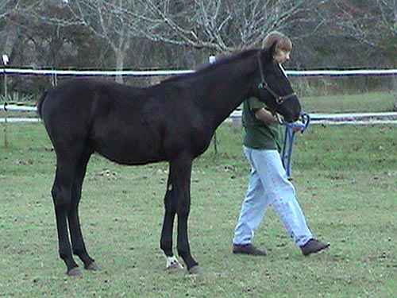

Miaren on Moving
Day We went and loaded up Miaren to bring
him over to our
place for a while. He was hesitant about
getting in the trailer, but
trusted us (and liked the food incentive).
I loaded him a couple of times,
then we shut the door and headed home.
He travelled well and unloaded
like he'd been doing it every day.
The electric fence was a puzzler, and
he touched it at least 3 times. The other horses
watched from the second pasture, and made
ugly faces to tell him that they were the boss.
We let him and Thuy together for a short
while, and Thuy chased him down a number of times.
Basically he kept Miaren away from 'his'
hay... After about 1/2 an hour we put Thuy back with Bob
and let Miaren settle in for the night.
No trotting around and neighing. Just
investigating his new home.
After the electric fence, he wasn't
sure if the feed bucket was to be trusted...
Telling the big guys that he's a baby.
He's little, but not really that little.
He's getting a little belly heading
into winter, and a nice fuzzy coat.
Here's where the belly comes from,
but I like that they can eat whenever they want.

We've got a few weeks to work towards
going to a local dressage show. They have an in hand class on the triangle.
If Miaren is as sensible as he was yesterday, we'll have no problem.